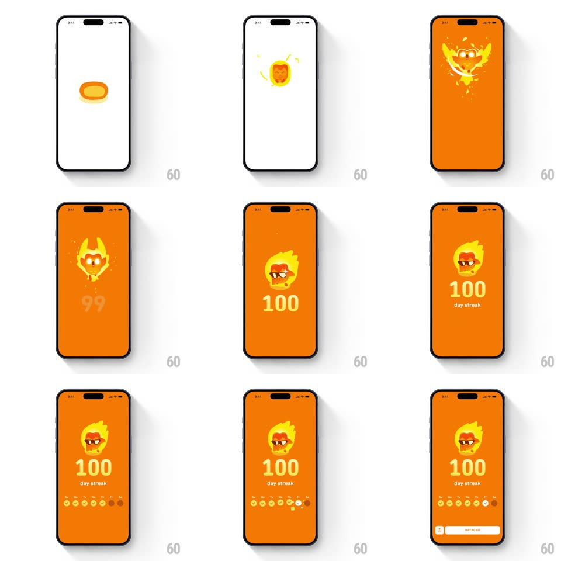

Media
Frame-by-frame

Rebuild this animation 1:1: Duolingo's 100-day streak - an orange flood fills the screen, the flame icon hatches a sunglass-wearing Duo face, the counter rolls 99 to 100, the week row fills, and a "WAY TO GO" button slides up.

Rebuild this animation 1:1: Duolingo's 100-day streak - an orange flood fills the screen, the flame icon hatches a sunglass-wearing Duo face, the counter rolls 99 to 100, the week row fills, and a "WAY TO GO" button slides up.
## Integration
Integration: stack-agnostic spec - springs given as stiffness/damping, timed motions as duration + curve; map every value to your framework and animation library of choice.
## Scene
Full-bleed orange screen: a yellow flame that cracks open to reveal Duo's face in sunglasses inside it, a giant yellow counter ("99" rolling to "100"), "day streak" sublabel, a week row of coin-like circles that fill with flame icons, and a white pill button "WAY TO GO". Sparks and ember flecks drift around the flame.
## Motion spec
Pattern: milestone celebration, ~3.5s.
- Flood: orange expands from center to cover the screen (400ms, ease-out).
- Hatch: the flame wobbles (rotate +-6deg, 2 cycles) then pops open (scale 1 -> 1.15 -> 1, spring ~360/18) revealing the Duo face with a sparkle burst.
- Counter: "99" rolls to "100" (500ms odometer, ease-out) with a scale bump on land (1 -> 1.1 -> 1).
- Calendar: the week circles fill left to right (110ms stagger, each popping 0.6 -> 1.1 -> 1) ending on the current day highlighted.
- CTA: the white "WAY TO GO" pill slides up (300ms, +200ms) with a soft shadow.
## Calibration
- Everything lives on orange - the flame, counter and week row are all yellow-on-orange.
- The roll 99 -> 100 adds a digit; the layout recenters as it grows.
## Reduced motion
Elements fade in sequentially (200ms each); counter snaps to 100.
## Don't miss
- Duo's sunglasses face replaces the plain flame - this is the milestone's special art.
- Ember particles drift upward slowly and keep going after the sequence settles.